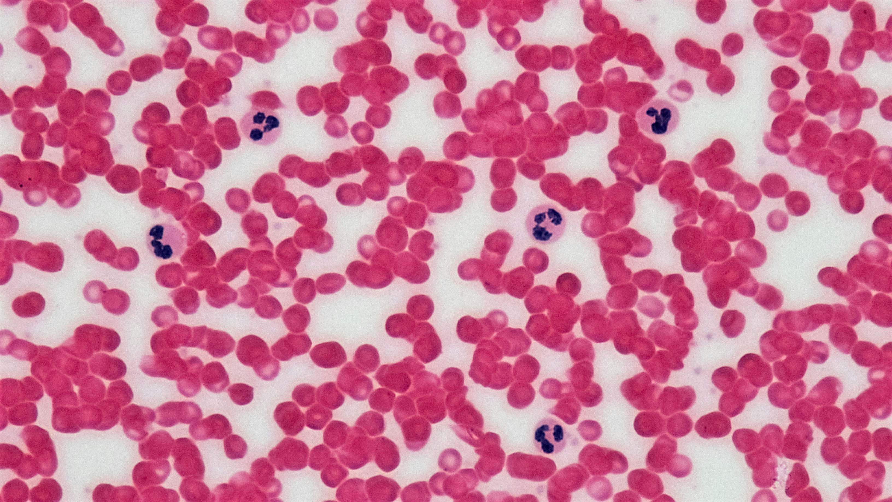
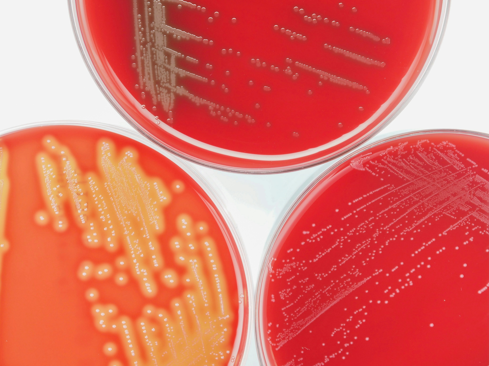
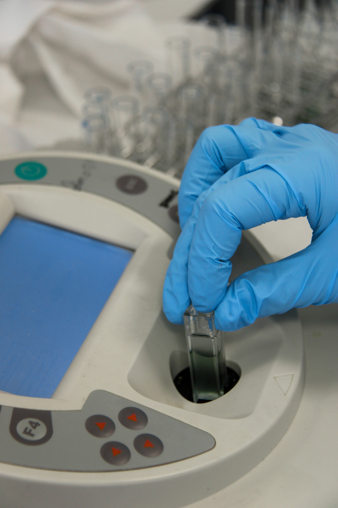
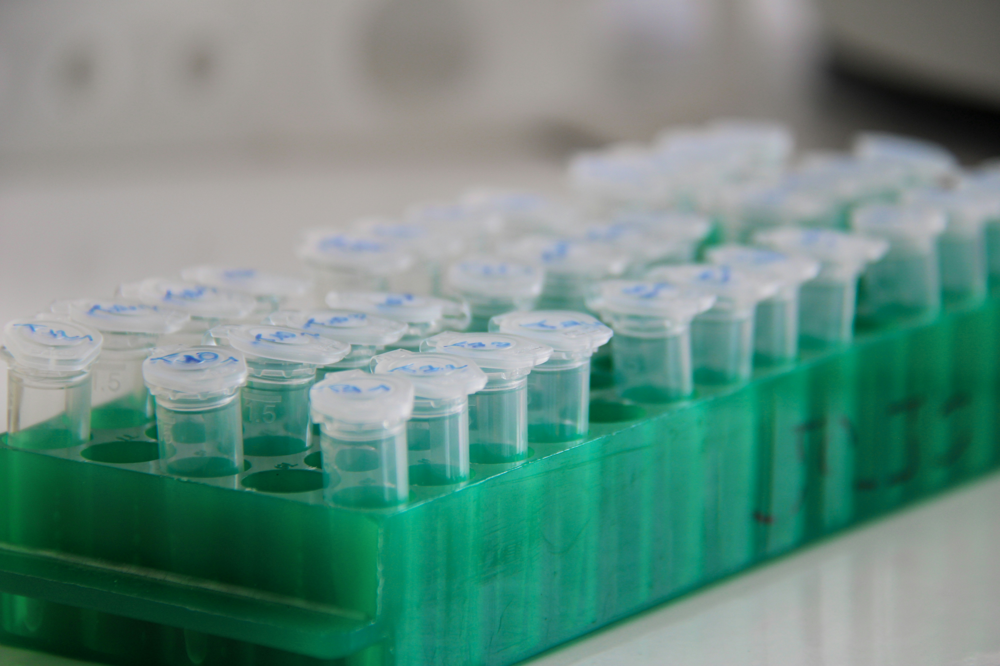
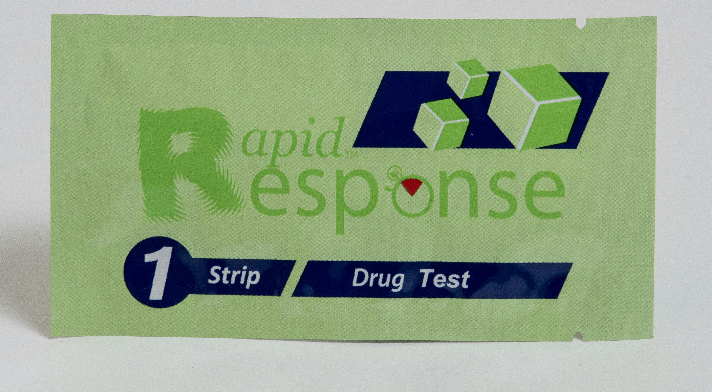

Serviços
Setores de Anatomia Patologica e Citologia
O setor de Citopatologia é formado pelos setores de anatomia patológica e citologia realizando biopsias em peças anatômicas variadas e a citologia compreende desde a mais simples, colpocitologia oncótica conhecida como Papanicolau até as análises citológicas mais complexas de diversos órgãos como a tireóide. Estes setores são constituídos por profissionais médicos altamente qualificados, que têm como objetivo promover um diagnóstico rápido, preciso e seguro.

Setor de Imunologia
O setor de imunologia realiza as análises laboratoriais para diagnóstico, controle e avaliação de doenças infecto-contagiosas das mais variadas etiologias: rubéola, toxoplasmose, citomegalovirus, hepatites A, B, C e D, HIV, HCV, HTLV, chagas, etc. Utilizando para tal equipamentos de ponta e profissionais altamente qualificados.

Setor de Biologia Molecular
Uma tecnologia recente e inovadora cujo interesse é realizar a pesquisa á nível molecular. Utilizada para diagnóstico e acompanhamento de pacientes controles de diversas etiologias como: HIV e Hepatites B e C, HPV, HLA, etc. Esta técnica é realizada também para a realização de estudos de determinação de paternidade.

Setor Hematologia
O setor de hematologia é responsável pelo diagnóstico e acompanhamento das doenças no sangue, pesquisando elementos estranhos nas células sanguíneas, sendo equipado com equipamentos que têm a finalidade de entregar resultados rápidos e seguros.

Setor de Microbiologia
O setor de microbiologia é responsável pela detecção de bactérias, fungos e protozoários em diversos materiais biológicos como urina, fezes, raspados e secreções, utilizando métodos convencionais e automatizados, com resultados padronizados tornando mais clara a interpretação clínica.

Setor de Bioquímica
O setor de bioquímica realiza exames básicos e especializados, utilizando em sua rotina equipamentos de alto desempenho, disponibilizando os resultados através de interface, onde todos os analitos passam por rígidos controles de qualidade. Os resultados aqui obtidos auxiliam o clínico no diagnóstico e acompanhamento dos pacientes de maneira rápida e precisa.

Setor de Endocrinologia
Realizando uma gama de hormônios, contemplando vários perfis como: tireoide, fertilidade, crescimento, metabólico, entre outros. Este setor conta com um parque de equipamentos de ponta, de alto desempenho, com seus resultados liberados através de interface após análise criteriosa dos controles de cada analito e do histórico dos pacientes por profissionais altamente qualificados. Resultados rápidos e precisos para um diagnóstico seguro.

Setor de Toxicologia
O setor de toxicologia é responsável pela realização de uma variedade de analitos, fornecendo determinações com alta precisão para atender às diretrizes de saúde ocupacional visando o PCMSO e os possíveis riscos ocasionados no ambiente de trabalho, realizando exames laboratoriais com equipamentos modernos, grande parte por HPLC, e profissionais altamente treinados, fornecendo resultados que irão auxiliar o clínico a prevenir, detectar e controlar as doenças ocupacionais.
